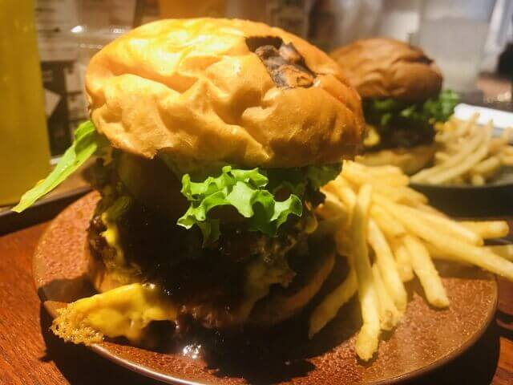

ABOUTME
Akiyoshi Takazawa
『リアル』×『IT』をテーマに、アナログなことををデジタルアプリで活用することで、世の中が便利になることに対して興味を抱き、Webプログラマーを目指す。
新卒から約5年間は、貸会議室やイベントスペースを販売する企業に勤めており、 イベントの企画から運営までをプロデュースする部署にて企画営業として所属しておりました。
今は、多くの時間をプログラミングに注ぐため退職し、日々スキルを磨き中。 イベントにおいて参加者と主催者がつながれるアプリケーションを作りたい。
一番大好きな食べ物ハンバーガー
食べ物の中で『ハンバーガー』が一番好きです。
野菜も食べれて、肉も食べれて、パンも食べれるのに、こんなにうまいのか。。
多くの店のハンバーガー巡りを徐々にしています。
一番好きなハンバーガーは、なんとマクドナルドの『エグチ』です。
専門店のハンバーガーはもちろんおいしいですが、『エグチ』はコスパ含めすべてがパーフェクトだと思っています。
爽快感が半端ないロードバイク
運動することがめちゃくちゃ好きで、ロードバイクに社会人から乗っております。川沿いを走っているときの爽快感がクセになります。
人と競り合うことが好きなので、レースにも参加します。(結果はおいておき、、)
最近は、ランニングも好きになり、どちらも日々精進しています。
将来的には、トライアスロンに挑戦していきたい。
猫を愛する男(犬も好きです。)
猫が好きです。写真は、元気な実家の三毛猫ちゃんです。
写真当時は、子猫ですが、今では大きな猫になりました。
猫のモフモフとした手が好きです。

WORKS

Akiyoshi Takazawa ポートフォリオサイト

Sample 工数管理ツール
SKILLS
身に着けているスキルをまとめております。フロントエンドからバックエンドまで広く浅くですが、スキル向上に取り組んでいます。
チャートの見方
| レベル | 定義 |
|---|---|
| 1 | 軽く使用した・学習した言語 |
| 2 | 制作物にて使用した言語 |
| 3 | 実務で数カ月以上使用しているが、習熟度が低い言語 |
| 4 | 実務作業が問題なく実施出来るレベル |
| 5 | 顧客の要望に対して、+αの価値を提供できる |
PROFILE
My Vision
自らのチカラを使う機会を創出し、人が喜ぶ期待以上のサービスを提供する
私は、自分自身のチカラを伸ばし、それを他者に対して貢献することでやりがいを感じます。多くの方に貢献するためには、常に自分を成長させなければなりません。自分の成長に対して、日々全力で取り組んでおります。
My Action Guidelines
Challenge ～『挑戦』～
難しいことに挑戦をすることを大事にしています。自分が居心地の悪いところこそ、成長出来ると信じています。
Positive ～『前向き』～
常に元気でいることを意識しています。また、積極性をもって行動するように心がけております。
Believe ～『信じる』～
自分や周りの仲間のことを信じて、日々取り組んでいます。自分で決めたことを必ずやり遂げる！と自分自身のことも信じています。